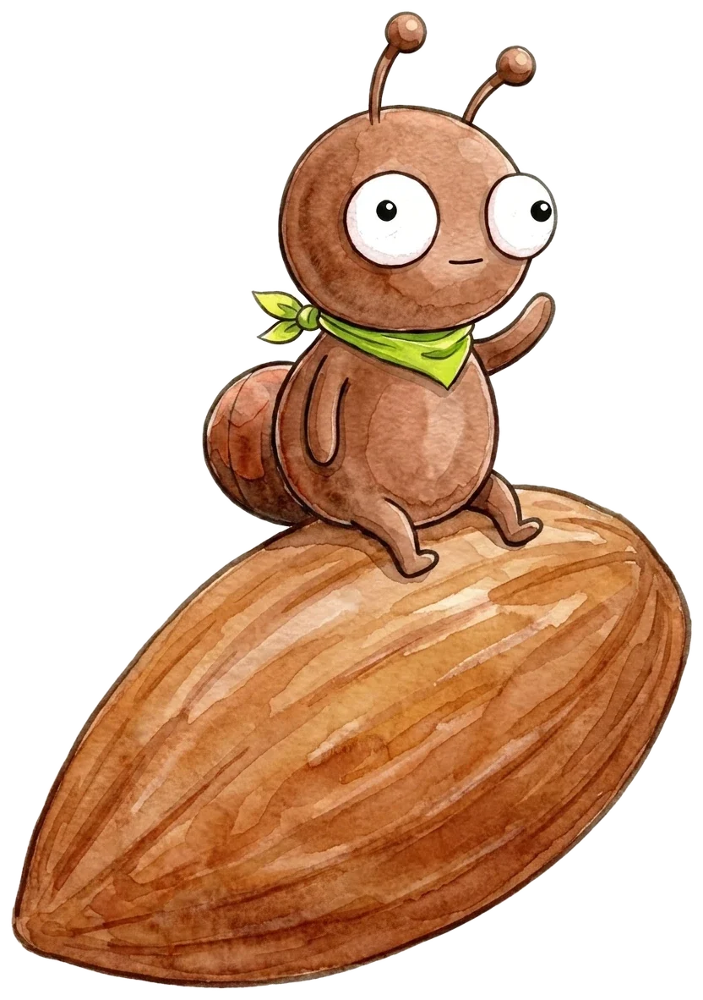
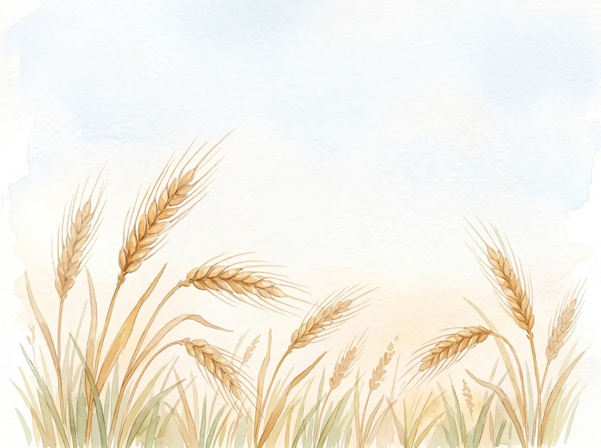
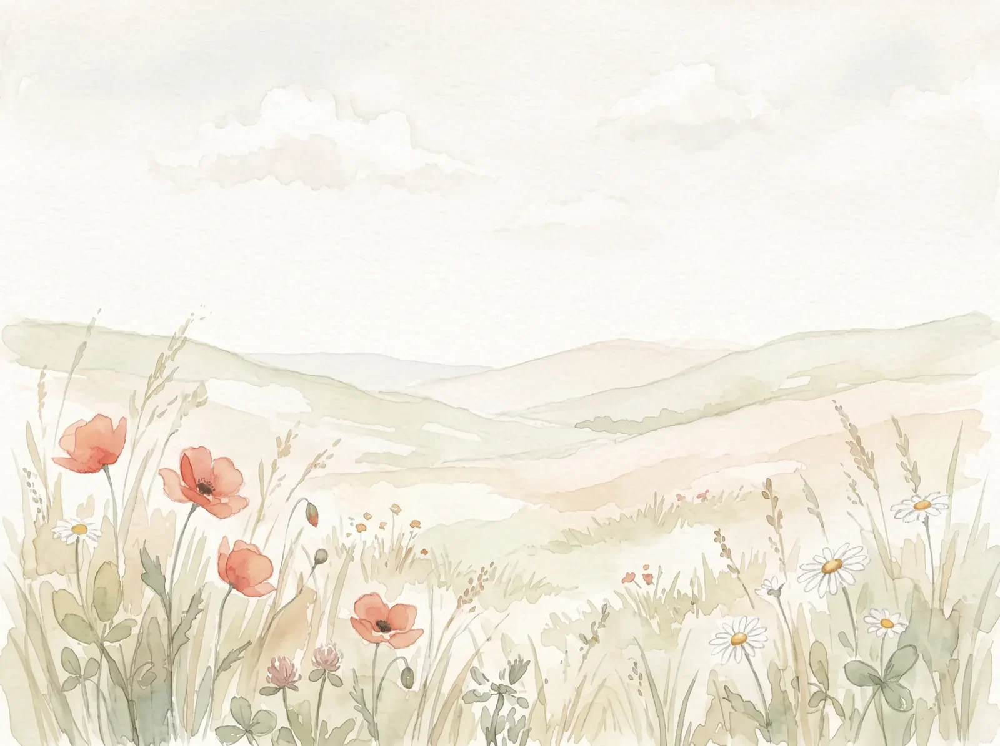
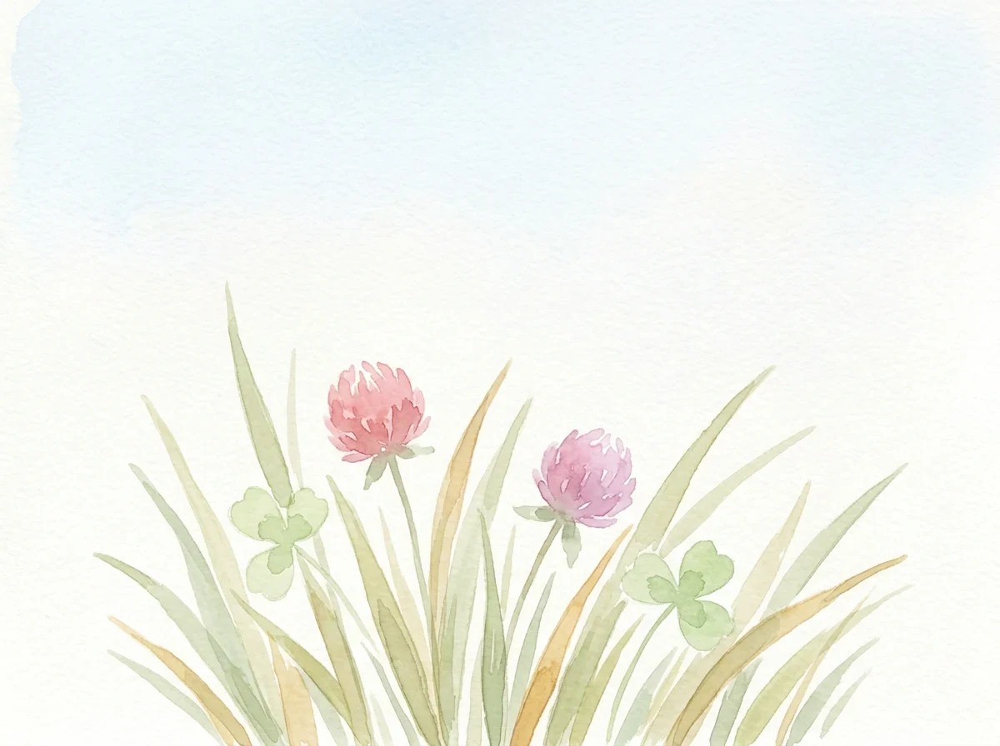

Give your users one API key for the top AI models, at network prices, paid from the balance they already hold with you.
The opportunity
Good for your users.Better for your bank.
AI subscriptions and API requests already leave your app. Agents need a key and a balance for every request. You already hold the balance.
A daily habit
Agents run every day, bringing recurring AI activity beside the balance.
A reward users notice
AI cashback gives prosumers a concrete reason to choose your app.
A reason to move up a tier
Give your best customers more back by adding AI rewards to your tiers.
Rewards on usage
Usage can earn Antseed Points, which determine a share of weekly ANTS rewards. Terms apply.
Ready for agents
Your app supplies the balance. Antseed supplies access to AI models.
Provider choice
One API gives users access across model families, with less provider lock-in.
02

The partner offer
Add AI agents to your app.In three moves.
Antseed brings
One API key
920+ models, including Claude, GPT, DeepSeek, Kimi and GLM.

Your user gets
Network prices
Independent providers compete on price for your users’ requests.

You add
Your reward
Cashback, points or tier perks that keep the customer relationship in your app.

Plus: usage can earn Antseed Points. Each Thursday, Points determine a share of weekly ANTS rewards; keep or pass them on. Terms apply.
Model coverage and reward proposal per the supplied brief; Solid launch details cross-checked publicly. Program eligibility and final terms apply.
03
Pricing and cashback
Network prices,then your reward.
Antseed lowers the price before your reward even starts. The network median for a healthy paid Opus 5.5 listing is $1.68 per million input tokens; 50% cashback takes it to $0.84.
04
Illustrative input-token savings after 50% cashback; network examples and Solid retail are distinguished below
−79–98%
Claude Opus 5.5 · network median for a healthy paid listing · USD per million input tokens
Lab list price
$4.00
Network median
$1.68
After 50% back
$0.84
−98%
GPT-6.1 Sol
List
$2.00
Solid net
$0.0445
−81%
Kimi K3
List
$3.75
After 50% back
$0.72
−95%
DeepSeek V4.1 Flash
List
$0.30
After 50% back
$0.014
Opus, Kimi and DeepSeek: historical network medians, 13 Nov 2026. GPT-6.1 Sol: Solid retail, $0.089 before cashback; table dated 4 Nov 2026. USD per million input tokens; rounded savings. Solid Opus retail: $0.21 ($0.105 after cashback). Cashback caps: $50/mo Core, $100/mo Prime, $200/mo Ultra. Solid launch post: 8 Nov 2026. Historical examples, not live quotes or whole-workload savings.
How it works
An API keyfor every customer.
Your gateway finds providers over Mainline DHT, connects directly and pays per request. Issue a key per customer or agent.
Provider failover, signed responses and model checks
Data handling: your selected provider processes requests. Solid says it stores no prompts or answers, only requests, tokens and cost for billing. Other providers’ data practices vary. Model checks provide evidence, not proof.
antseed — zsh
Gateway
~ $ antseed gateway start
API-key gateway listening on http://127.0.0.1:8379/v1
0 active key(s). Manage them in the console or with `antseed gateway key …`.